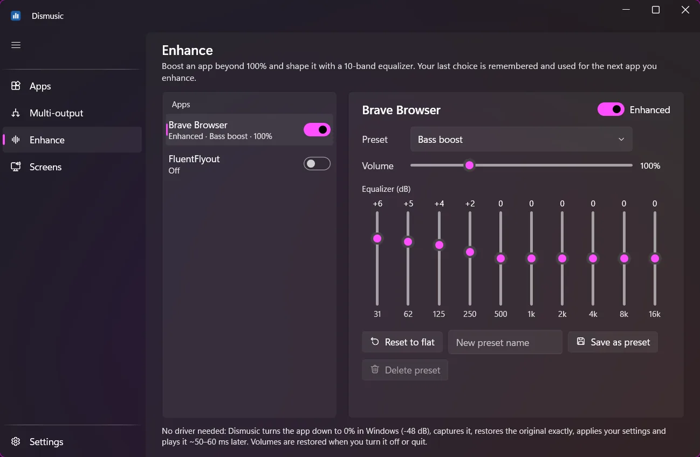
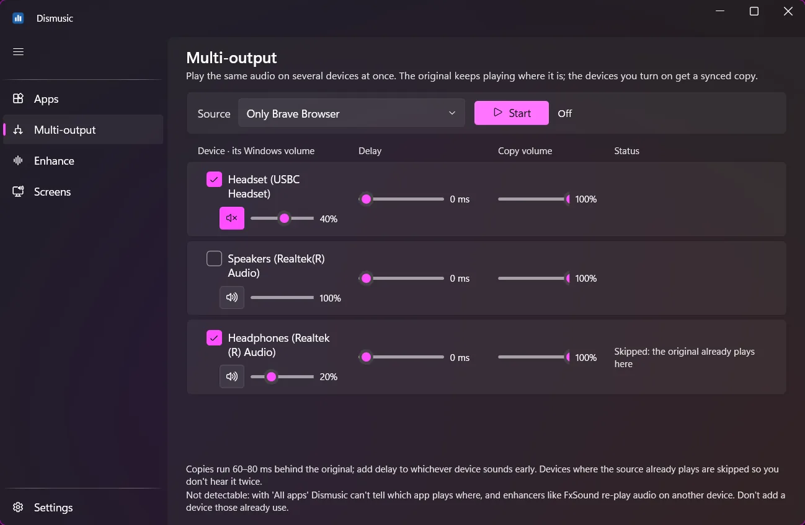

Per-app output
Send your browser to headphones and a game to speakers. Uses the same mechanism as Windows' own volume mixer, so the choice is remembered even without Dismusic.
Dismusic is a free Windows tray app. Pick an output for each app, play one source on several devices in sync, let audio follow the screen a window is on, and boost or EQ any app, all without installing an audio driver.

Five tools in one small app that sits in the notification area and starts with Windows.
Send your browser to headphones and a game to speakers. Uses the same mechanism as Windows' own volume mixer, so the choice is remembered even without Dismusic.
Play one app, or everything on a device, on more outputs at the same time. Copies are kept in sync automatically, with per-device delay and volume. Devices that already play the original are skipped, so nothing echoes.
Map each monitor to its speakers. Move a video to the TV and its sound moves to the TV's HDMI audio; move it back and the sound comes back.
Raise an app up to 400% with a limiter that prevents clipping, shape it with a 10-band EQ, and save your own presets. Your last choice is remembered and applied again after Windows starts.
Click the tray icon for the current output's volume and mute, and switch the Windows default output in one click.
Everything works with built-in Windows audio interfaces. Nothing is installed system-wide, and Dismusic makes no network connections.
Fluent design with Mica, a navigation rail and keyboard shortcuts (Ctrl+1 to Ctrl+5 switch pages). It follows your light or dark theme.


Tools like this usually install a virtual sound device. Dismusic doesn't. When you enhance an app, it turns that app down to 1/256 in Windows (it shows as 0% in the volume mixer), so the original keeps playing at -48 dB, which you can't hear. It captures the app with Windows' own loopback interface, multiplies it back by exactly 256, applies your boost and EQ, and plays the result on the same device about 50 to 60 ms later. When you turn enhancement off or quit, the app's volume is put back. If Dismusic ever closes unexpectedly, it restores the volume the next time it starts.
There's no installer. Dismusic is a single file you can keep anywhere.
Dismusic folder in your user folder. Start with Windows points at wherever the file is.To check your download, run Get-FileHash .\Dismusic-0.2.0-win-x64.exe in PowerShell and compare:
21a12707b22a814a65da9b6edc2d46dd5d53ddef0e83977bbed786fc8f7db8b7
| Windows | Windows 10 version 2004 (build 19041) or later, or Windows 11. 64-bit. |
|---|---|
| Permissions | A normal user account. No administrator rights needed. |
| Other software | None. The download includes everything it needs, including .NET. |
Turn off Start with Windows in Settings, choose Exit from the tray icon, then delete the file. To remove settings and logs too, delete %APPDATA%\Dismusic and %LOCALAPPDATA%\Dismusic.
What Windows allows decides some of this, so it's worth knowing before you rely on it.
Dismusic makes no network connections and collects nothing. Your settings stay in %APPDATA%\Dismusic\settings.json and a small log in %LOCALAPPDATA%\Dismusic. This website has no analytics, trackers or cookies.
Yes. There's nothing to buy and no account.
That's how enhancement works without a driver: the original is turned down to an inaudible level and Dismusic plays the processed version instead. Control the app's level with Dismusic's volume slider. Turning enhancement off puts the app's volume back.
That happens when a device gets both the original and a copy. Dismusic skips devices where the source already plays, but it can't see what other enhancers or the "All apps" source send where. Turn off the device that already plays the sound, or choose "Everything on" a device as the source.
Yes. Bluetooth adds its own delay (often 100 to 250 ms), so when mixing it with wired speakers, add delay to the wired device until they line up.
Per-app output choices are stored by Windows and keep working without Dismusic. Multi-output, screen follow and enhancement need it running, which is why it starts with Windows.